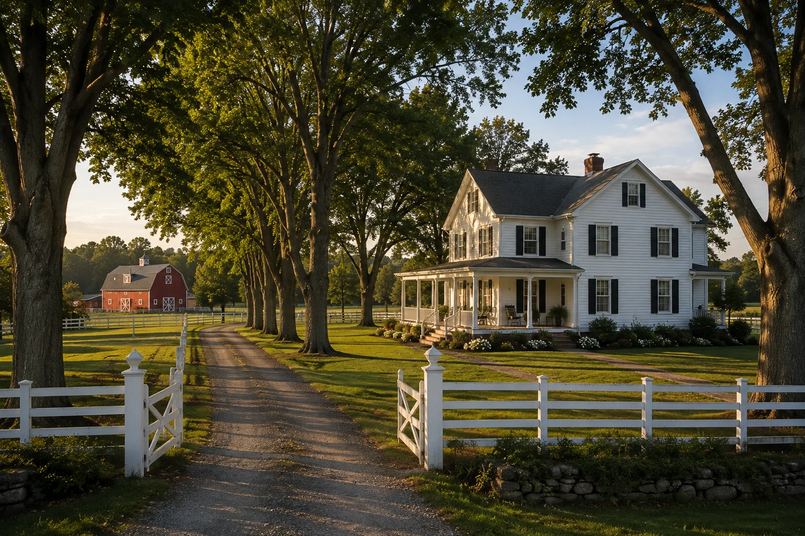

01
The Mercer Family Home
The old family farmhouse sits back from the road behind a long, tree-lined drive. The white house, fencing, and red barn speak to the family history that existed long before the estate became a source of conflict.